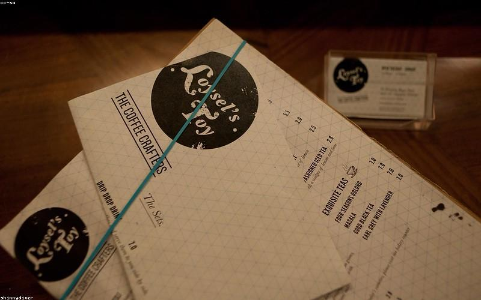
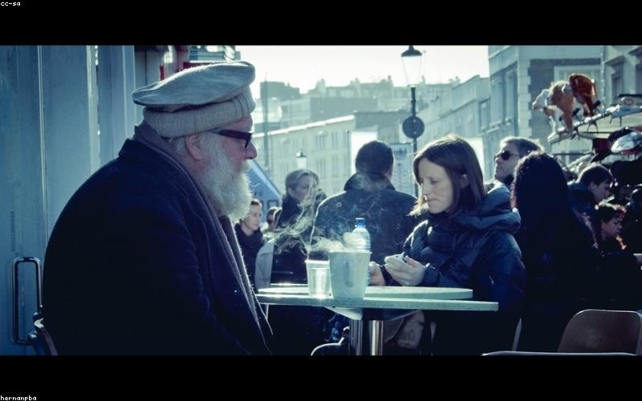
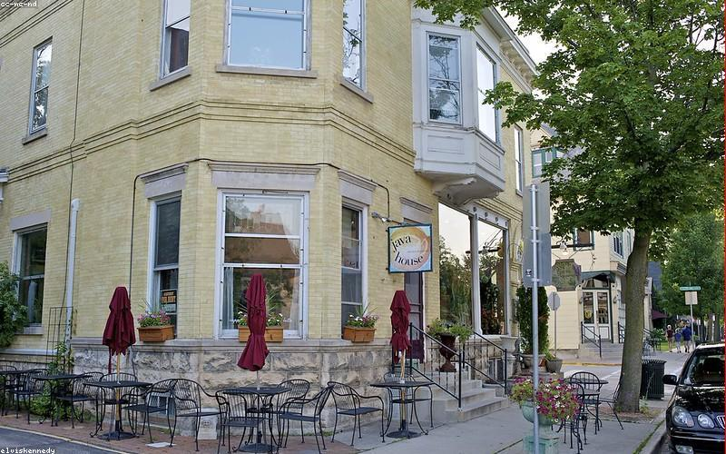
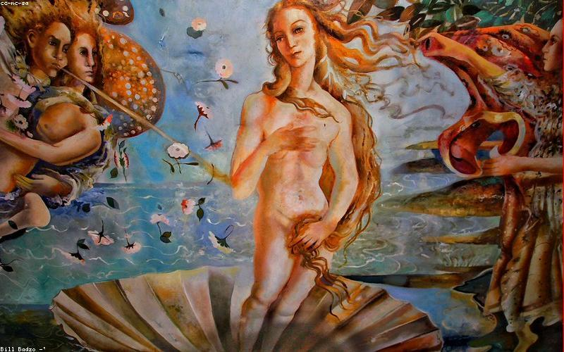
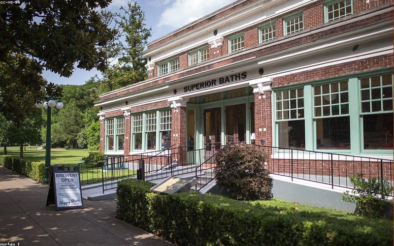
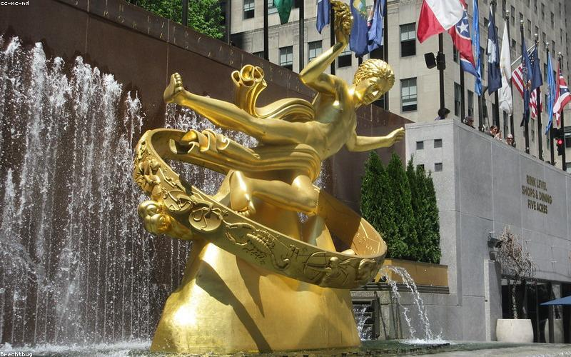

Places
Where to go,
what to do

Coffee · Flagship
3fe Grand Canal Street
Grand Canal Street Lower, Docklands
Where Dublin's specialty coffee era started. Colin Harmon opened 3fe (Third Floor Espresso) and built it into the city's benchmark roaster over a decade. The Grand Canal Street café is the original — the roastery is nearby, the sourcing is excellent, the training is rigorous. Espresso and milk drinks are the strength here; filter is good but espresso is what this place does at its finest. If you only go to one coffee shop in Dublin, this is the correct answer.
↗ MAPS

Coffee
3fe Aungier Street
Aungier Street, city centre
The bigger sibling — better location for the city centre, same quality. More seating, good for working. The same 3fe sourcing and training, more accessible from the Portobello/Ranelagh axis. Worth knowing about for when the Grand Canal Street one is full.
↗ MAPS

Coffee
First Draft Coffee
Pearse Street, near Docklands
Neighbourhood specialty café a few minutes from the Docklands. Good sourcing, rotating guest roasters alongside their own. A good option if 3fe Grand Canal is full or if you want a different register — First Draft is more neighbourhood-feeling than the 3fe flagship.
↗ MAPS

Food · Wine Bar
Ely CHQ
CHQ Building, IFSC
Wine bar and restaurant in the beautiful CHQ (Custom House Quay) building — a 19th-century tobacco and tea warehouse that's now one of Dublin's better covered commercial spaces. Good wine list organised by producer, Irish grass-fed beef, decent small plates. The setting is the reason to go — the building is genuinely impressive and the canal views from outside complete the picture.
↗ MAPS

Food · Brasserie
The Woollen Mills
Ormond Quay, north Docklands
Brasserie in a former wool warehouse on the Liffey quays. All-day menu, good brunch, reliable evening eating. The building is beautiful and underused as a backdrop — the original cast-iron structure is visible throughout. Best for a long weekend lunch or early evening meal.
↗ MAPS

Bar
The Barge
Charlemont Street, near Grand Canal
Large pub beside the Grand Canal lock — outdoor seating right on the water is the draw. Packed on summer afternoons and evenings. Not a craft beer specialist but the setting makes it the most pleasant place to drink outside in this part of Dublin. One of the few Dublin pubs where the terrace is actually good rather than a car park with tables.
↗ MAPS

Bar · Craft Beer
Against the Grain
Wexford Street, near Grand Canal
Dublin's best craft beer bar. Proper draft selection, knowledgeable staff, no noise pressure, good atmosphere. The kind of place where you can have a conversation and also try something genuinely interesting from the taps. Cork and Wicklow craft breweries feature heavily alongside European imports.
↗ MAPS

Venue · Architecture
Bord Gáis Energy Theatre
Grand Canal Dock
The main large-scale venue in the Docklands — theatre, concerts, comedy. Daniel Libeskind's building is worth seeing in itself even if you're not attending. The red-pole facade over the canal dock is the Docklands' most distinctive piece of architecture. Check what's on — the programming covers major touring shows and music acts.
↗ MAPS